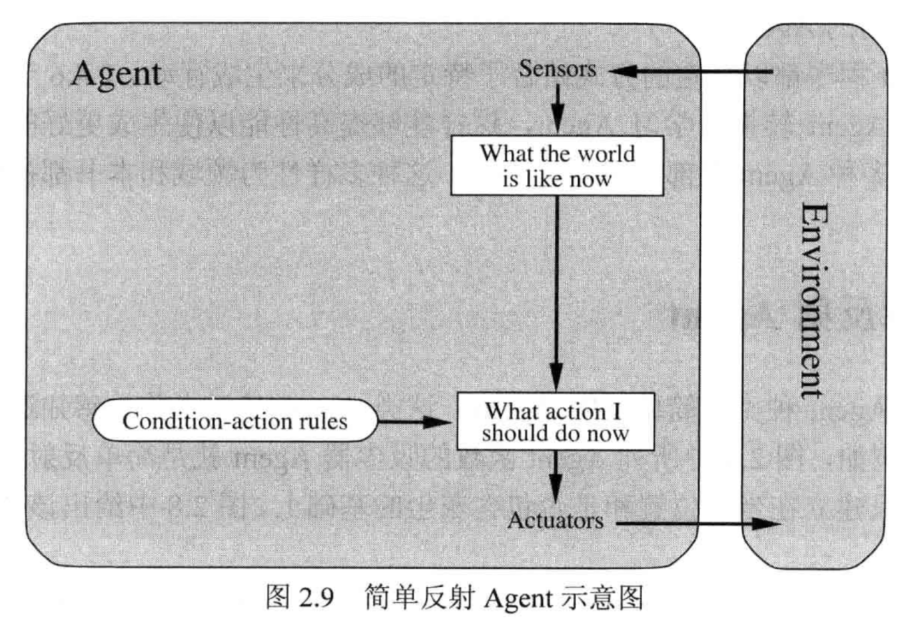
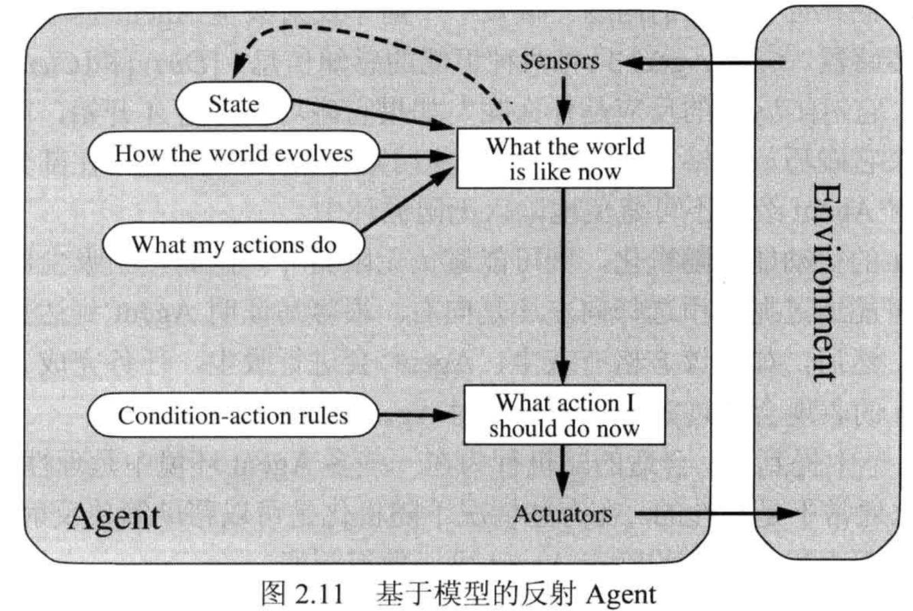
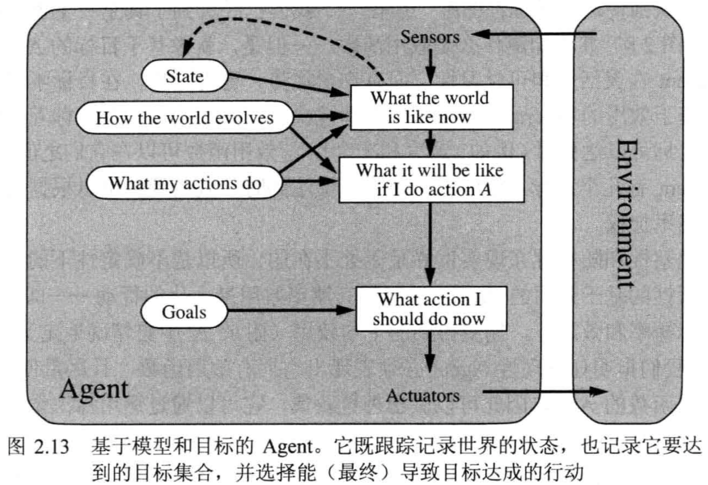
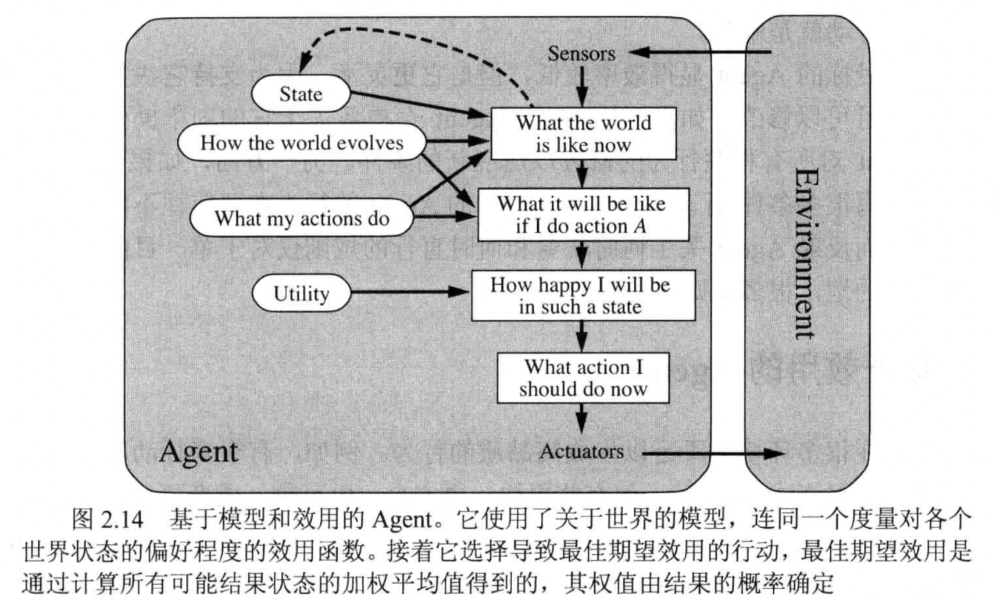
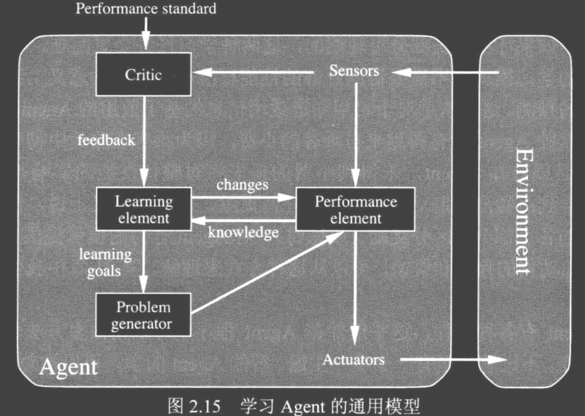
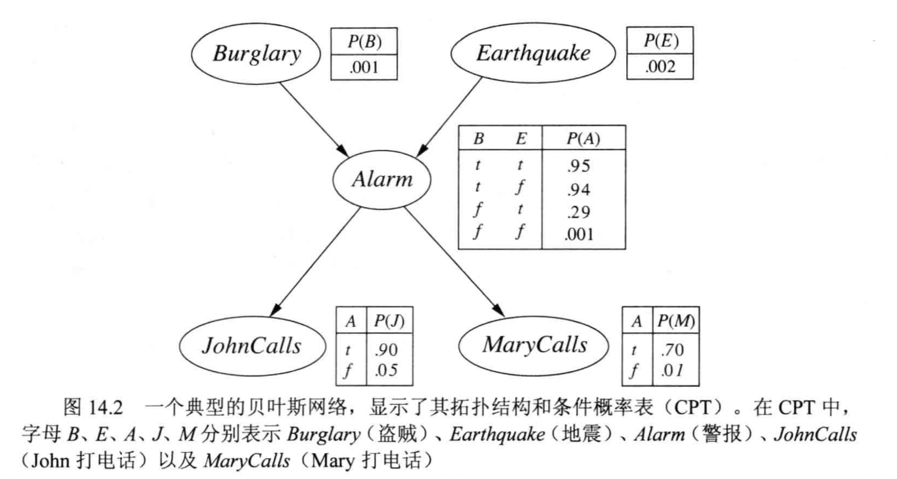
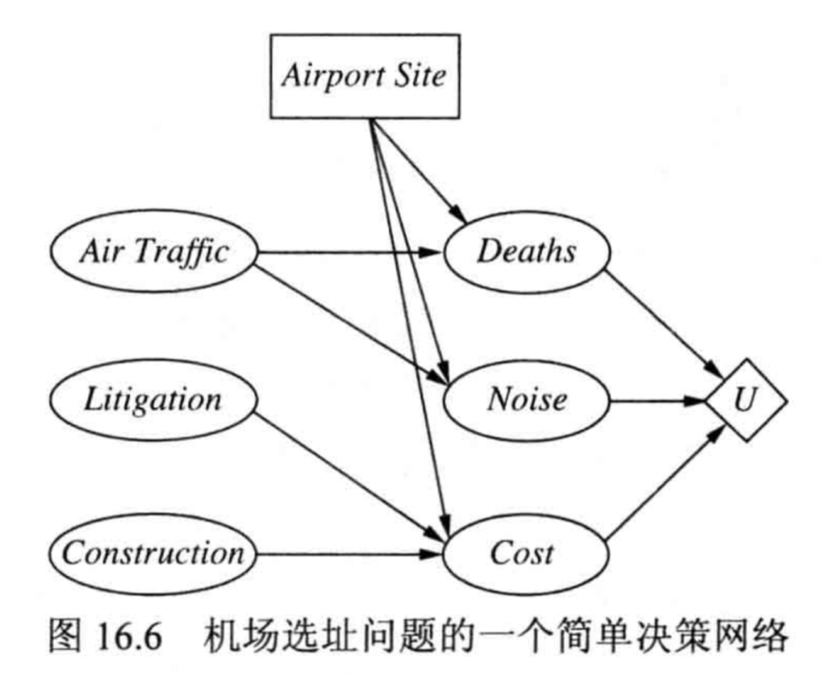

🐔寄！人工智能导论复习
人工智能导论
第 1 章 绪论
- 分数：5 分。
- 题目范围：
- 您认为什么是人工智能？
答题重点
从两个角度：
像人一样还是理性思考还是行动
不同人会对 AI有不同的思考。要问的两个重要问题是:你关心的是思考还是行为?你是想模拟人还是按照理想标准工作?
例如：
我认为 AI 是像人一样行动的系统：
“创造能执行一些功能的机器的技艺,当由人来执行这些功能时需要智能”(Kurzweil,1990)
“研究如何使计算机能做那些目前人比计算机更擅长的事情”(Rich 和Knight,1991)
什么是人工智能
- 人工智能
- 用人工的方法在机器(计算机)上实现的智能;或者说是人们使机器具有类似于人的智能。
- 定义一:像人一样思考的系统(评价:计算机从定义开始) 像人一样思考:认知建模的途径
- 定义二:理性地思考的系统 合理地思考:“思维法则”的途径
- 定义三:像人一样行动的系统 合理地行动:合理 Agent 的途径
- 定义四:理性地行动的系统
- 图灵测试(Turing test)
- 1950 年图灵发表的《计算机与智能》中设 计了一个测试，用以说明人工智能的概念。
- 目的是为智能提供一个满足可操作要求的定义。
- 与其提出一个长长的、可能有争议的清单来列举智能所需要的能力,不如采用一项基于人类这种无可置疑的智能实体的辨别能力的测试。如果人类询问者在提出一些书面问题后,无法判断答案是否由人写出,那么计算机就通过了测试。
需要的能力：
- 自然语言处理
- 知识表示
- 自动推理
- 机器学习
第 2 章 智能化 Agent
- 分数：5 分。
- 题目范围：
- Agent 的架构，尤其是基于模型和效用的 Agent 架构。
- 准确理解基于模型和效用 Agent 的任务、环境、评价标准等。
- !基于学习 Agent 的一般模型。
考试内容
画出架构图
PEAS：Agent 的任务、环境、评价标准
根据首字母缩写,我们称之为 PEAS 描述( Performance(性能), Environment(环境), Actuators(执行器), Sensors (传感器))。设计 Agent 时,第一步就是尽可能完整地详细说明任务环境
Agent 架构
- 智能体(Agent)
- 某种能够行动的东西。不同于简单程序, 它可以实现:自主控制的操作、感知环境、持续能力、适应变化、以及有能力承担其它 Agent 的目标。
- 理性智能体(Rational Agent)
- 可以通过自己的行动获得最佳结果。或者在不确定的情况下,获得最佳期望的结果。
在任何给定时间，什么是理性取决于四件事：
- 定义成功标准的绩效衡量标准。
- 代理对环境的先验知识。
- 代理可以执行的操作。
- 代理迄今为止的感知序列。
For each possible percept sequence, a rational agent should select an action that is expected to maximize its performance measure, given the evidence provided by the percept sequence and whatever built-in knowledge the agent has.
对于每个可能的感知序列，考虑到感知序列提供的证据以及智能体拥有的任何内置知识，理性智能体应该选择一个预期能够最大化其性能度量的动作。
agent = architecture + program
简单反射 Agent

基于模型的 Agent

基于目标的 Agent

基于效用的 Agent

基于学习的 Agent

学习 Agent 可以被划分为 4 个概念上的组件,如图 2.15 所示。最重要的区别体现在学习元件和性能元件之间,学习元件负责改进提高,而性能元件负责选择外部行动。性能元件是我们前面考虑的整个 Agent:它接受感知信息并决策。学习元件利用来自评判元件的反馈评价 Agent.做得如何,并确定应该如何修改性能元件以便将来做得更好。
第 7 章 逻辑 Agent
- 分数：5 分。
- 题目范围：
- 命题逻辑的语法、命题逻辑的推理模式或推理方法
- 理解书中怪兽世界任务的推理，包括 𝑹𝟏~𝑹𝟏𝟎 的证明，以及 𝑹𝟏𝟏~𝑹𝟏𝟓 的将句子转换成合取范式
- 基于归结或反证法的证明。
- 理解推理规则及公理，以便用于命题逻辑的推理。
- !命题逻辑的连接符及其语义
往年题目
推导 R1-R10，R11-R15
命题逻辑
- Knowledge base (KB)
- A set of sentences
- Sentence
- Represents some assertion about the world
- Axiom
- Not derived from other sentences
经典问题为：
语法
对于命题：
\[\alpha |= \beta\quad \iff\quad M(\alpha) \subseteq M(\beta)\]
对于命题逻辑：
- \(\neg,\wedge,\vee,\implies,\iff\)
- True, False
语义
注意 \(\implies\) 的语义
命题推理
命题推理的目标： \(KB|=\alpha\)
简单推理过程
- 逻辑推理：用蕴含关系来证明
- 模型检验：枚举所有的可能
定理证明
Applying inference rules without models.
利用逻辑等价的命题逻辑。
单调性：随着信息添加到知识库中，所包含的句子集只会增加。
产生了 R6-R10
使用搜索算法证明
- INITIAL STATE：The initial knowledge base
- ACTIONS：Match the top half of the inference rule
- RESULT：Add the sentence in the bottom half of the inference
- GOAL：The sentence to prove
使用如下的方法：
\[ \begin{aligned} \alpha \implies \beta,\quad \alpha\\ -----------\\ \beta \end{aligned} \]
\[ \begin{aligned} \alpha \wedge \beta\\ -----------\\ \beta \end{aligned} \]
逻辑等价
\[ \begin{aligned} \alpha \iff \beta\\ -----------\\(\alpha\implies \beta)\wedge (\beta\implies\alpha)\\ \\ (\alpha\implies \beta)\wedge (\beta\implies\alpha)\\-----------\\ \alpha \iff \beta \end{aligned} \]
消解法（归结法）
消解规则：
\[ \begin{aligned} l_1 \vee l_2\quad \neg l_2\vee l_3 \\----------\\ l_1\vee l_3 \end{aligned} \]
思路
- 要证明：\(KB|=\alpha\)即证明：\(KB\wedge\neg\alpha\)不可满足的
方法：
转换\(KB\wedge \neg \alpha\)为合取范式
消解
如果新子句尚不存在，则将其添加到集合中
该过程一直持续到：
- 不能添加新的条款
- 产生了空条款 -- 不可满足
产生了 R11-R15
第 10 章 知识表示
- 分数：6 分。
- 题目范围：
- 情景演算、情景、流、前提条件公理、效应公理等概念。
- !本体论、类别、对象，并举例说明
本体论相关
本体
- 本体
- Organize everything in the world into a hierarchy of categories
- 主要着重于一些在许多不同领域都会出现的通用概念例如事件、时间、物理对象以及信念。表示这些抽象概念有时被称为本体论工程（ontological engineering）。
- 念的通用框架被称为上位本体论( upper ontology),因为按照画图惯例，更一般概念在上面而更具体的概念在它们的下面。如图
- Concentrate on general concepts in different
domains：专注于不同领域的一般概念
- Events, Time, Physical Objects, and Beliefs
本体（ontology）的几个代表性定义： (1) 本体是对于“概念化”的某一部分的明确的总结或表达[2]。 (2) 本体在不同的场合分别指“概念化”或“本体理论”[3]。 (3) 本体是对于“概念化”的明确表达[4]。 (4) 本体是用于描述或表达某一领域知识的一组概念或术语。它可以用来组织知识库较高层次的知识抽象，也可以用来描述特定领域的知识[5]。 (5) 本体属于人工智能领域中的内容理论（content theories），它研究特定领域知识的对象分类、对象属性和对象间的关系，它为领域知识的描述提供术语[6]。 从以上定义我们可以知道，本体通过对于概念、术语及其相互关系的规范化描述，勾画出某一领域的基本知识体系和描述语言。其中定义 1、2 和 3 以“概念化”的定义为基础，概念化（以及定义 2 中的“本体理论”）的定义见下文。 与本体相关的概念和术语： 本体论（Ontology，o 大写）：特指哲学的分支学科[3]。
类别和对象
- 类别、对象
- 用一阶逻辑表示类别有两种选择: 谓词和对象。就是说,我们可以使用谓词 Basketball(b),或者可以将类别物化(reify)为一个对象, Basketball。然后,我们可以用 Member(b, Basketballs)(我们将它缩写为 b∈Basketballs)来说明 b 是篮球类别的一个成员。 我们用 Subset( Basketball,Bals)(缩写为 Basketballs c Balls)来说明 Basketball.s 是 Ball.s 的一个子类(subcategory)。我们将交替使用术语子类(subcategory)和子集(subclass, subset)。
- 将对象组织成类别是知识表示的重要组成部分。很多推理发生在类别层面。
- 一种是从感知输入推断某些对象的存在，从对象的感知属性推断类别成员资格，然后使用类别信息对对象进行预测。
- 一种是通过继承来组织和简化知识库，子类关系构成一个层次结构
- （部分关系、a 组成了 b）Partof
- 一个对象可以是另一个对象的一部分
- PartOf is transitive（传递） and reflexive（自反）
- 反之有：BunchOf: define composite objects with definite parts（定义一个物体由有限个 Part 组成）
- 事物
- 现实中有相当一部分对象没有明显的个性化(individuation)。 即划分成独特对象—事物
- 现实世界可以视为由原始对象(粒子)和由其构成的复合对象组成的、
- 事物和物体(thing)的最大区别：（如果将一只土豚切成两半， 不会得到两只土豚。）
- 对象=事物
stuff-物质、thing-物体
- 测度
- Objects have height, mass, cost, and so on. The values that we assign for these properties are called measures.
情景演算
- Event calculus
- Based on points of time rather than on situations
- Predicate T
- 断言 流体 在某个时间点是正确的
过程
- 过程（process / liquid event)
- 具有这种属性的事件类别被称为过程( process)类别或者流事件( liquid event)类别。发生在一个时间区间的任何过程 e 也在任何子区间里发生。
- 如果 fluent 是由过去某个时间的事件启动并且没有被中间事件变为 false（剪切），则 fluent 在某个时间点成立。
- 流(fluent)指的是使情景从一个变换到下一个的函数和谓词。
- 一个特殊的事件-Start
- 通过说明在开始时间启动或终止哪些流来描述初始状态。
一个物理对象是一块时空
- Physical objects can be viewed as generalized events
第 14 章 概率推理
- 分数：8 分。
- 题目范围：
- 贝叶斯网络的定义、贝叶斯网络的语义。
- 给定贝叶斯网络，要求能够写出相应的联合概率分布。
- 针对书中的盗贼警报任务，理解贝叶斯网络的精确推理，并且能够在给定证据的情况下进行推理。
定义/语义
Represent the dependencies among variables
- 贝叶斯网络
- 贝叶斯网络是一个有向图,其中每个结点都标注了定量的概率信息。其完整的说明如下:
- 每个结点对应一个随机变量,这个变量可以是离散的或者连续的。
- 一组有向边或箭头连接结点对。如果有从结点 X 指向结点 Y 的箭头,则称 X 是 Y 的一个父结点。图中没有有向回路(因此被称为有向无环图,或简写为 DAG)。
- 每个结点 X 有一个条件概率分布 P( K| Parents(X)),量化其父结点对该结点的影响。

有两种方式可以理解贝叶斯网络的语义。
- 第一种是将贝叶斯网络视为对联合概率分布的表示。
- 第二种则将其视为是对一组条件依赖性语句的编码。
这两种观点是等价的,但是前者可以帮助我们理解如何构造网络,而后者则可以帮助我们设计推理过程
如何计算联合概率？
如何构造贝叶斯网络：链式法则
如何进行精确推理
原理：精确推理就是计算后验概率：随机变量：\(X\)，条件\(e\)，隐藏的节点\(y\)：
\[P(X|e)=\frac{P(X,e)}{P(e)}\mathop{=}^{\alpha:=P(e)^{-1}}\alpha \sum_yP(x,y,e)\]
计算方法：
重点：\(\alpha\)不计算，通过求出 X 不同取值下的联合概率，然后归一化得到
- 求随机变量各个取值的联合概率
- 归一化得到结果
例题
最暴力的方法：
| Scene | Probability | Result |
|---|---|---|
| b,e,a | 0.001 0.002 0.95 0.9 0.7 | 1.197*10^-6 |
| b,e,-a | 0.001 0.002 0.05 0.05 0.01 | 5.*10^-11 |
| b,-e,a | 0.001 0.998 0.94 0.90 0.70 | 0.000591016 |
| b,-e,-a | 0.001 0.998 0.06 0.05 0.01 | 2.994*10^-8 |
| -b,e,a | 0.999 0.002 0.29 0.9 0.7 | 0.000365035 |
| -b,e,-a | 0.999 0.002 0.71 0.05 0.01 | 7.0929*10^-7 |
| -b,-e,a | 0.999 0.998 0.001 0.9 0.7 | 0.000628111 |
| -b,-e,-a | 0.999 0.998 0.999 0.05 0.01 | 0.000498002 |
所以
- \(P(b|j, m)=0.000592243 \alpha\)
- \(P(\neg b|j,m)=0.00149186\alpha\)
归一化后：（实际上\(\alpha =1/(0.000592243+0.00149186)\)）
- \(P(b|j, m)=0.000592243 \alpha=0.284172\)
- \(P(\neg b|j,m)=0.00149186\alpha=0.715828\)
从而：
\[P(B|j,m)=\langle0.283172,0.715828\rangle\]
第 16 章 制定简单决策
- 分数：8 分。
- 题目范围：
- 理解什么是最大期望效用原则。
- 理解决策网络，尤其是决策网络中的节点类型。
- 给定一个决策网络，能够计算不同动作的期望效用，并选择具有最大期望效用的动作。
- !偏好、效用
最大期望效用原则
最大期望效用(MEU)原则：理性 Agent 应该选择能最大化该 Agent 的期望效用的那个动作。
效用函数：效用是从状态映射到实数的函数。
决策网络

- 机会结点(Chance node)(椭圆)代表随机变量,就像它们在贝叶斯网中所表示的一样。关于建设费用、空中交通级别和诉讼可能性以及 Deaths、 Noise 和总体 Cosr 变量一其中每一个又依赖于选址一 Agent 可能是不确定的。每个机会结点关联着一个以父结点的状态为索引的条件分布。在决策网络中,父结点既可以包括决策结点也可以包括机会结点。注意到为了评估建设费用、空中交通级别或者诉讼可能性,每个当前状态机会结点都可能是一个大的贝叶斯网络的部分。
- 决策结点(decision node)(矩形)代表在该结点上决策制定者有一个对行动的选择。在这个案例中, Airport site 行动可以对考虑中的每个位置呈现不同的值。选择影响到费用、安全以及会产生的噪音。在本章中,我们假设我们处理的是单一决策结点。第 17 章将处理必须制定多于一个决策的情况效用结点(utility node)(菱形)代表 Agent 的效用函数'。
- 效用结点把所有那些描述直接影响效用的结果状态的变量作为父结点。与效用结点关联的是一个描述,它将 Agent 效用描述为对父结点属性的一个函数。这个描述可能只是函数的表格形式, 或者它可能是参数化的属性值的加法或线性函数。
给定决策网络，计算不同动作的期望效用
行动的选择是通过对决策结点的每种可能设定的决策网络进行评价而完成的。一旦决策结点被设定,它的行为表现完全像一个被设定为证据变量的机会结点。评价决策网络的算法如下:
- 为当前状态设定证据变量。
- 对于决策结点的每个可能值;
- 把决策结点设为该值。
- 对该效用结点的父结点,使用一个标准的概率推理算法计算其后验概率。
- 为该行动计算结果效用。
- 返回有最高效用的行动这是贝叶斯网络算法的一个直接扩展,可以直接结合到图 13.1 给出的 Agent T 设计中去。
依次执行几个行动的可能性使问题变得有趣得多
偏好和效用
下面六条约束被称为效用理论公理。它们指定附加在偏好和彩票上的明显的语义约束。
- 有序性(Orderability)。给定任意两个状态,一个理性 Agent 必须偏好一个状态甚于另一个。或者认为偏好两者的程度一样。也就是说,该 Agent 不能逃避决策。拒绝打赌就如同拒绝时间逝去一样。
- 传递性(Transitivity)。给定任意三个状态,如果一个理性 Agent 偏好 A 甚于 B,偏好 B 甚于 C,则该 Agent 一定偏好 A 甚于 C。
- 连续性(Continuity)。如果某个状态 B 在偏好上处于 A 和 C 之间,那么一定存在概率 p,使得该理性 Agent 在【肯定得到 B】、【以概率得到 A,并以概率 1 − p 得到 C】的彩票之间无偏向。
- 可替换性(Substituitability)。如果一个 Agent 在两个彩票 A 和 B 之间无偏向,则该 Agent 在更复杂的两个彩票之间也是无偏向的。这样的两个彩票,除了一个彩票中的 A 被 B 替换以外是一样的。这是成立的,而不用考虑彩票中的概率和其它结果。
- 单调性( Monotonicity)。假设存在两个彩票有两个结果 A 和 B,如果一个 Agent 偏好 A 甚于 B,那么该 Agent 一定偏好 A 的概率高的彩票。反之亦然。
- 可分解性(Decomposability)。复合彩票可以通过概率法则被简化为简单一些的彩票。由于两个相继的彩票能够被压缩成个等价的单个彩票,这曾被称为“赌博无乐趣”规则。
注意:效用理论的公理没有提到任何关于效用的内容：它们只谈论了偏好。偏好被假定为理性 Agent 的一个基本属性。一个效用函数的存在遵循下列效用公理:
- 效用原则(Existence of Utility Function)。如果一个 Agent 的偏好遵循效用公理，则存在一个在状态上进行运算的实值函数 U,使得 U(A)>U(B),当且仅当 Agent 偏好 A 甚于 B 时。并且 U(A)=U(B),当且仅当该 Agent 在 A 和 B 之间无偏向时。
- 最大期望效用原则(Expected Utility of a Lottery)。一个彩票的效用是把每个结果的概率乘以每个结果的效用的乘积，然后求和。
换句话说,一旦可能结果状态的概率和效用被指定,涉及到那些状态的复合彩票的效用就被完全确定了。一个非确定性动作的结果是一个彩票,这将提供根据公式(16.1)得到的 MEU 决策规则。
效用函数刻画的是偏好关系，假如你相比梨来说更偏好苹果，那么苹果给你带来的效用就应当大于梨所带来的效用。但注意效用函数虽然是一个数学函数，但在本例中它仅表示不同消费组合之间效用的排序关系，而非真正的，可以用数字来刻画的“效用量”。换言之，你可以说你相对梨来说更偏好苹果，但绝对没办法说“苹果大于梨 n 个效用单位”。当然，在某些特定的领域也有用基数效用方程的，比如在期望效用理论中。
作者：徐惟能 链接：https://www.zhihu.com/question/22310615/answer/20962418 来源：知乎 著作权归作者所有。商业转载请联系作者获得授权，非商业转载请注明出处。